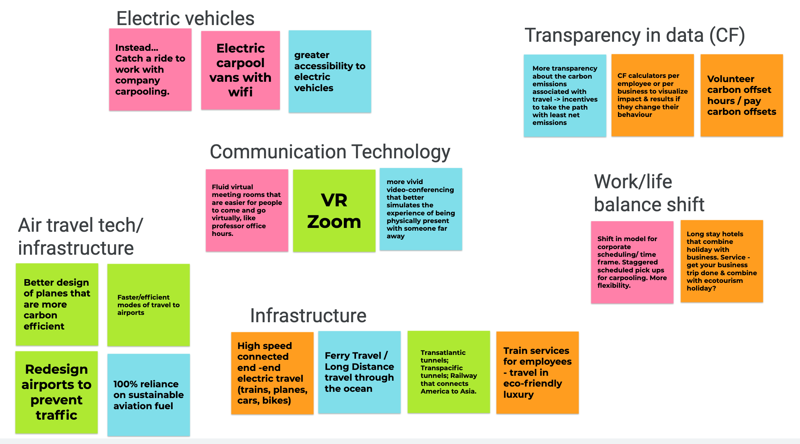
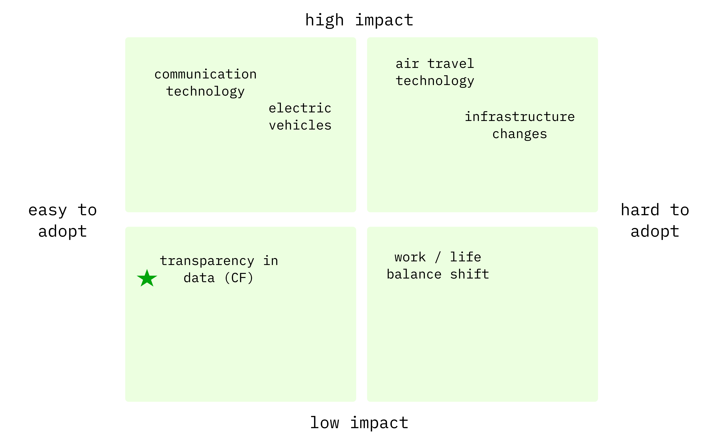
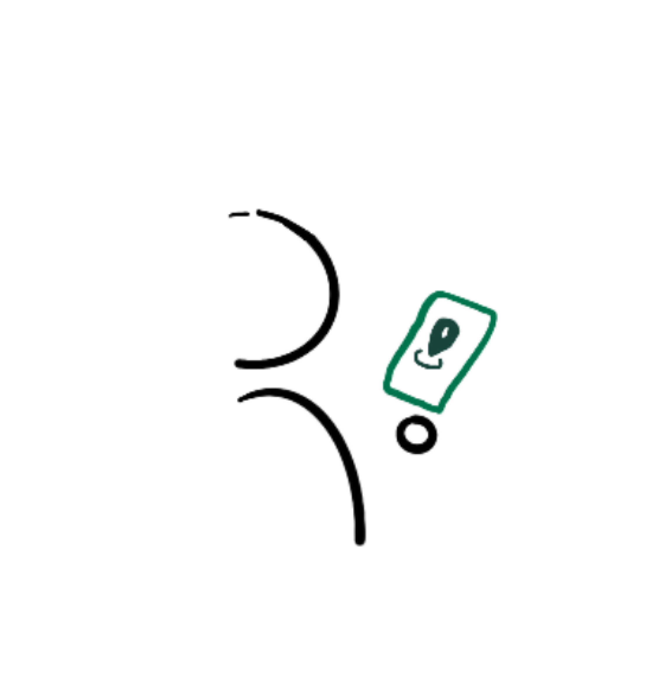
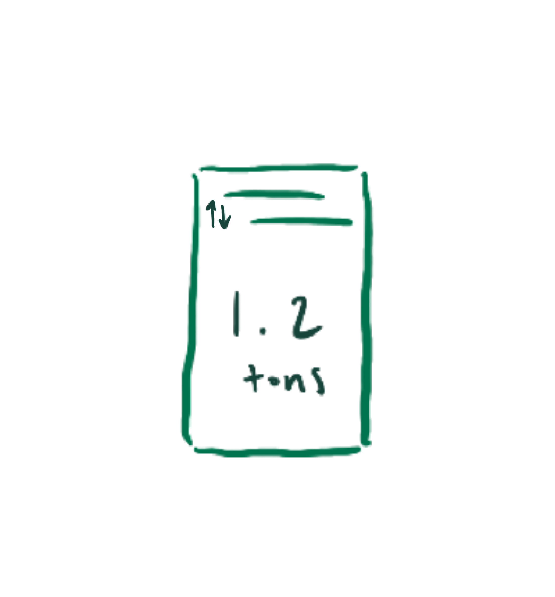
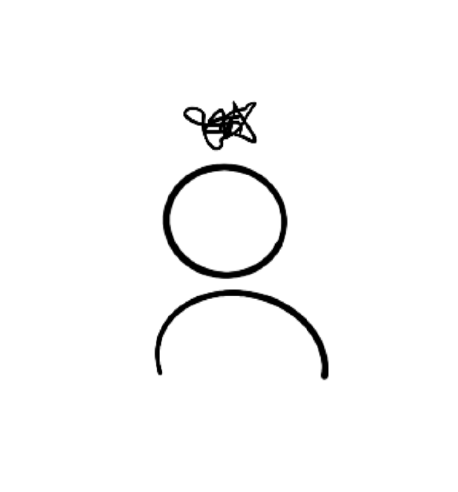
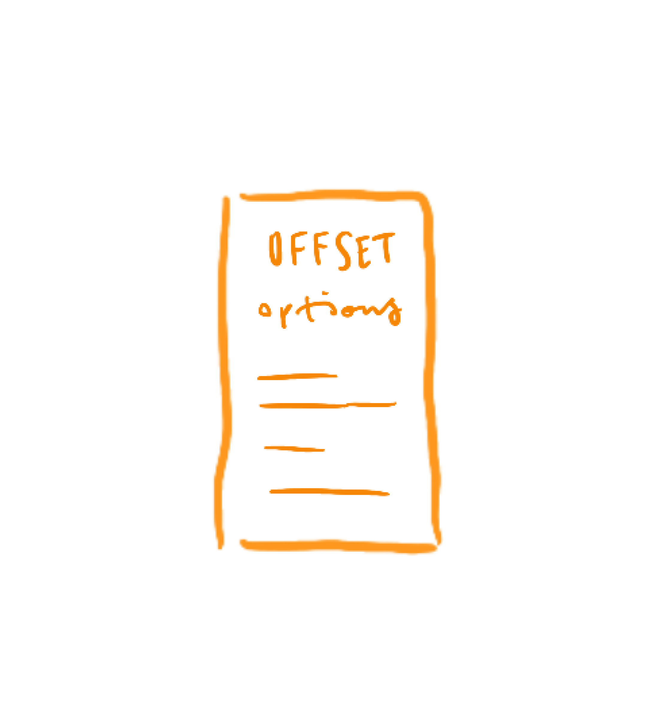
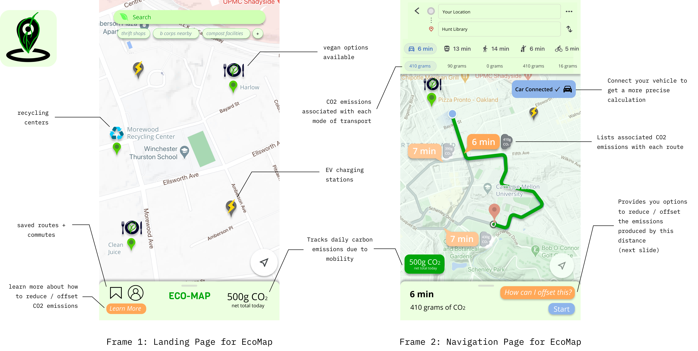

DURATION: February 2021
CONTEXT: 51-396: Designing for Climate Change
Last Spring, eager to learn more about how design can impact sustainability,
I took a course called Designing for Climate Change. For our first project, we
were tasked with calculating our carbon footprint, identifying the primary contributor to our footprint,
and ideating on possible measures or tools that can help
propel a decarbonized future.
Methods
Causal Layered Analysis
Storyboarding
Affinity Diagramming
Wireframing
Tools
Figma
Google Jamboard
Procreate
Carbon Footprint
After calculating my carbon footprint using the
Ecological Footprint Calculator
and the Carbon Calculator,
I realized that my mobility and shelter were the most significant contributors to my carbon
usage. Prior to this class, I hadn't really grasped the impact of every flight, every drive,
every increase on the thermostat, and every extra light on in my apartment.
After examining the results, I chose to focus on mobility for my project because I didn’t really
have much information regarding my utilities and their efficiency since I was only
paying for my internet and electricity, relying on the default values when inputting them into the calculators.
Causal Layered Analysis (CLA)
I then applied Sohail Inayatullah's futurist framework of Causal Layered Analysis, identifying the litany, systems,
worldview, and myths / metaphors that informed my mobility in the year 2020. As you can see below, I immediately identified
my own incognizance of my carbon behaviors as a result of systems that conceal the true ramifications of pursuing convenient transportation methods.
| CLA |
Year 2020 |
| Litany (Behavior) |
i travel to between Portland and Pittsburgh multiple times a year; i frequently travel internationally to visit my extended family as well as just for vacation; i travel unaware of the consequences -- 30 hours a year |
| Systems |
least carbon efficient modes of transportation are made the most convenient; no real substitute for air travel if you’re going overseas; lack of transparency regarding the carbon emissions that different forms of travel produce; tourism industry |
| Worldview |
importance of family, connection; experience other cultures, tourism; emphasis on what is most accessible and convenient, short-term |
| Myths & Metaphors |
ignorance is bliss; proximity → connection; culture is rooted in place; “life is short”, culture of ASAP, emphasis on here and now, “time is money”, expediency = efficiency |
From there I thought about the litany, systems, worldview, and myths / metaphors that would inform a completely carbon neutral earth by the year 2050.
Immediately I was drawn to the notion of carbon transparency and how it has already led to astonishing developments in EVs that
could stimulate further innovation in this space by 2050.
| CLA |
Year 2050 |
| Litany (Behavior) |
EV vehicles, transition to 100% sustainable aviation fuel, carbon zero travel overall; people only travel if they know there are no net carbon emissions produced |
| Systems |
infrastructure / policy conducive to sustainable forms of travel + promoting carbon consciousness; automobile and airline industries are completely sustainable
|
| Worldview |
earth-centric; culture of consciousness, transparency about energy usage
|
| Myths & Metaphors |
time carbon is precious/finite; expediency sustainability = efficiency; emphasis on the long-term
|
Affinity Diagramming
Those of us who chose mobility as our focus then bounced around ideas for potential solutions /
tools that would help move society towards the behaviors, systems, and worldview we identified as
ideal to a carbon-neutral 2050.

We affinity diagrammed our ideas and in the process of doing so, determined the various subdomains within the
space of mobility. As we continued to brainstorm, we thought about the different ways in which the ideas in each
subdomain could be combined or fleshed out, eventually mapping each subdomain of ideas the impact of ideas in that space
against the ease of adoption of the ideas in the real world. I was more drawn to ideas that were easy to adopt than those that
had a larger impact because I felt it was important that people first have access to the information necessary to feel the
need or compulsion to care about the issue in the first place. As a result, I decided to target generating transparency in data
as it pertains to our individual carbon footprints.

Storyboarding
From there we were tasked to storyboard potential idea(s) that address our chosen problem or subdomain. My own personal
experience of remaining ignorant of the carbon impact of my travel (particularly my flights) informed my storyboard.
Very simplistic, my storyboard conveyed a platform in which I could easily make myself not only aware of the impact of my
travel but also the potential ways in which I could offset such an impact.




The Idea
In an attempt to build off of existing mental models and maximize ease of adoption, I decided my idea
would be a mobile application that creates transparency over the carbon emissions associated
with different modes of transportation and displays opportunities to lower emissions. Essentially this application
would serve as a re-imagined, sustainablility-oriented, google maps (or even a potential API or extension
if we want to optimize integration further).
- transparency: calculates footprint associated with a selected route and mode of transport
- potential for impact: provides reduction strategies and offset options for each mode
- carbon consciousness: tracks net CO2 emissions based on offsets and routes
- bonus: highlights EV charging stations, restaurants with vegan options, certified B corps, thrift shops, etc.


Once I had fleshed out the concept, I evaluated it once more with regard to the same CLA framework I had used to initially
identify the values I needed to propagate in order to faciliate carbon neutrality.
| CLA |
EcoMap |
| Litany (Behavior) |
promotes awareness of how CO2 emissions vary by route and mode of transport as well as of strategies of reduction or offsetting; draws attention to more sustainable businesses and behaviors (ex. thrift shopping, plant-based options, etc.)
|
| Systems |
its now standard for different transportation industries to be transparent about their CO2 emissions; more platforms promote sustainable practices
|
| Worldview |
culture of consciousness, being aware of your CF as well as how to change it
is commonplace
|
| Myths & Metaphors |
knowledge is power; it’s not that hard to be sustainable
|
With this idea I hoped to address one of my reflection questions: how can we expect
change to occur if we are not cognizant of the need for such a change in the first place? I feel that an increase in
transparency regarding carbon emissions and accessibility of strategies to reduce or offset those emissions will lead to a
more sustainable future. Sometimes we want to do the right thing, but we're not sure what the right thing is or I guess more truly,
we'd rather not do the wrong thing than do the right thing → an increase in accessibility of the problem and the potential solutions
can correct this mentality.